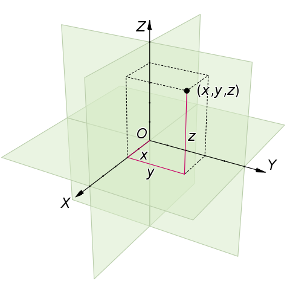
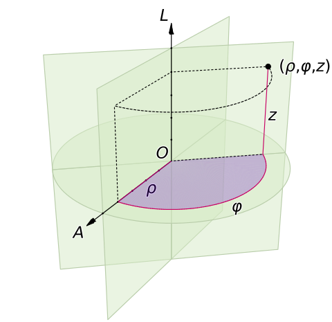
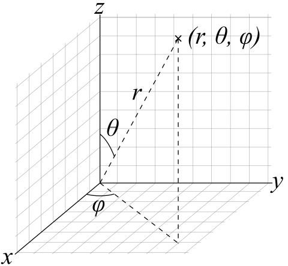
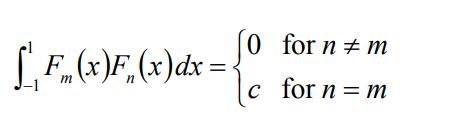
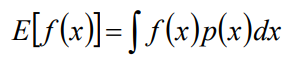
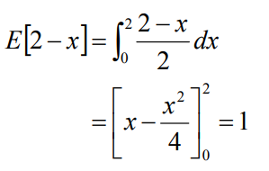
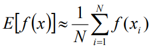
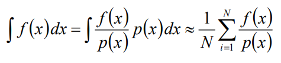

三种坐标系
矩坐标
矩坐标似乎是中文网络上才有的说法，正确叫法是笛卡尔坐标系。

柱坐标
柱坐标其实就是圆的定义的延伸。柱的横截面是圆，圆有一个半径r和角度φ，柱则还有一个厚度维度z。

球坐标
球坐标是极坐标的三维形式。

基函数和投影和重建
基函数和正交
假设3D空间中有一个点P，记它的位置为函数f，f究竟是个什么东西呢？或者说怎么用数学描述f？
答案是用坐标系，坐标系的本质就是一组正交的基函数(basis)。
大家知道3D空间的笛卡尔坐标系有3个basis：(1,0,0)、(0,1,0)、(0,0,1)。这3个基向量是正交的。
正交性有2个特点：
- 任意2个不同的basis之间点积结果为0
- 任意一个basis和它自己做点积，结果为常数c
用积分式子表达这个正交关系：

（当C为1时，其中的F称为正交基函数orthonormal basis functions）
有了这个概念后，f这个事情就有了下一步的方向了：怎么用(1,0,0)、(0,1,0)、(0,0,1)描述f？
投影
假设这个3D空间中有另一个参数物O，那么P究竟离O*有多远呢*
假设没有其他工具、且人眼变成了一个正交相机，那么可以用三视角来判断P和O的距离：
- 站在P的正面，观察P和O的相对位置，即得到P在xy平面的投影点
- 站在P的侧面，观察P和O的相对位置，即得到P在yz平面的投影点
- 站在P的头顶，观察P和O的相对位置，即得到P在xz平面的投影点
平面上的投影点P'，和O的关系又怎么办呢？因为我们已经通过三视图把三维问题降成了二维问题，同理也可以把二维问题降到一维，即继续把P投影到三个basis轴上得到P''。P''和O的距离就好办了，用尺子量。
通过这个降维的办法，最终就能得到P在三个basis(1,0,0)、(0,1,0)、(0,0,1)上的投影距离x、y、z，一般也叫投影系数。也可记为：(x,0,0)、(0,y,0)、(0,0,z）。投影系数数量等于basis数量。
同时f可以记为f=(x,y,z)。f的投影过程可以数学描述了。
记basis为\(\mathbf B_{i}\), f在\(\mathbf B_{i}\)投影系数记为\(C_{i}\)，并拓展f到任意维度、任意坐标系：
\[ C_{i} = \mathbf f \cdot \mathbf B_{i} \]
验证：
\[ (x,y,z) \cdot (1,0,0) = x \] \[ (x,y,z) \cdot (0,1,0) = y \] \[ (x,y,z) \cdot (0,0,1) = z \]
到了这里，f到三个basis的投影问题就解决了。接下来讨论的是怎么用basis和投影参数，重建f。
重建
很简单，f其实就是三个basis和三个投影系数分别相乘后的累加：
\[ (1,0,0) * x = (x,0,0) \] \[ (0,1,0) * y = (x,y,0) \] \[ (0,0,1) * z = (0,0,z) \] \[ f = (1,0,0) * x + (0,1,0) * y + (0,0,1) * z = (x,y,z) \]
也可以用矩阵的形式表达：
\[ \mathbf f = \left[ \begin{matrix} 1&0&0\\ 0&1&0\\ 0&0&1\\ \end{matrix} \right] \left[ \begin{matrix} x\\ y\\ z\\ \end{matrix} \right] \]
更标准的描述：
\[ \mathbf f = \sum_{i=1}^{n} \mathbf B_{i} C_{i} \]
注意这里的\(\mathbf B_{i}\)基函数究竟是什么样的是不确定的，可能是上面的笛卡尔基函数，也可能是球坐标基函数，当然最重要的是下文会提到的球谐基函数。
综上，当f未知而\(C_{i}\)已知时，我们可以用上述公式重建出f。
数学期望和蒙特卡洛积分
数学期望
数学期望是随机变量输出值的加权平均，连续随机变量的数学期望公式如下：

其中的p是概率密度函数，p的积分需要等于1。
举一个例子，求f(x) = 2 - x在定义域[0, 2]的数学期望值。需要先构造一个概率密度函数p，p显然等于1/2。于是有：

蒙特卡洛积分
对于没有解析式或者不好算积分的f(x)，可以用离散采样f(x)并加权求平均的方法求数学期望：

再结合上一节的式子：
就可以用来算f(x)的积分了（不是数学期望！）：

这也就是所谓的蒙特卡洛积分了。
写作不易，您的支持是我写作的动力！